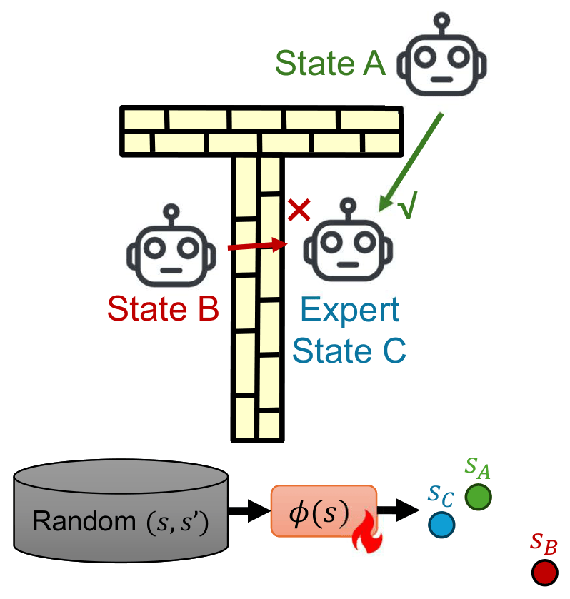
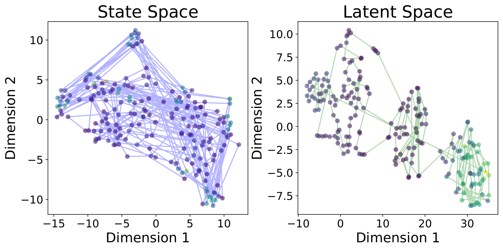
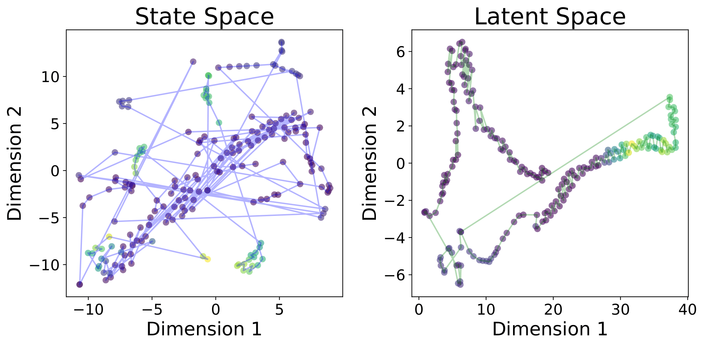
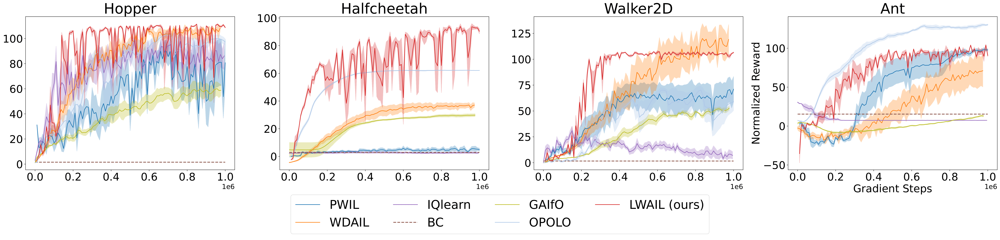

Abstract
Imitation Learning (IL) enables agents to mimic expert behavior by learning from demonstrations. However, traditional IL methods require large amounts of medium-to-high-quality demonstrations as well as actions of expert demonstrations, both of which are often unavailable. To reduce this need, we propose Latent Wasserstein Adversarial Imitation Learning (LWAIL), a novel adversarial imitation learning framework that focuses on state-only distribution matching.
It benefits from the Wasserstein distance computed in a dynamics-aware latent space. This latent space is obtained via a pre-training stage, where we train an Intention-Conditioned Value Function (ICVF) to capture a dynamics-aware structure of the state space using a small set of randomly generated state-only data. This enhances the policy's understanding of state transitions, enabling the learning process to use only one or a few state-only expert episodes to achieve expert-level performance. Through experiments on multiple MuJoCo environments, we demonstrate that our method outperforms prior Wasserstein-based IL methods and prior adversarial IL methods across various tasks.
Why the Distance Metric Fails
Many prior Wasserstein IL works that employ the Kantorovich–Rubinstein (KR) dual overlook an important issue: the distance metric between individual states is rather simplistic. The Euclidean distance is common, but it fails to capture the environment's dynamics. For example, a state might be physically close to an expert state in Euclidean space, but unreachable due to an obstacle — making it a poor metric for the learning process.
Our Approach
We propose a two-stage process:
Pre-training stage. We leverage a small amount (1% of online rollouts) of unstructured, low-quality (e.g., random) state-only data to train an Intention-Conditioned Value Function. The resulting embedding captures a rich, dynamics-aware notion of reachability between states.
Imitation stage. We freeze this ICVF embedding and use the Euclidean distance in this new latent space as the cost function within a standard Wasserstein AIL framework.
In the adversarial imitation learning stage, we optimize the following objective:
Here $\pi$ is the policy to be learned, $f$ is the critic constrained to be 1-Lipschitz, $d^\pi_{ss}$ is the state-transition pair distribution induced by policy $\pi$, $d^E_{ss}$ is the expert state-transition pair distribution, and $\phi(\cdot)$ is the frozen ICVF embedding mapping raw states to the dynamics-aware latent space. The critic maximizes the Wasserstein discrepancy between policy and expert transition-pair distributions in latent space, while the policy minimizes it.
Performance
We validate our approach on pointmaze, antmaze, and challenging locomotion tasks in the MuJoCo environment from the D4RL benchmark, achieving strong results using only a single trajectory of state-based expert data. Our results show that the latent space captures transition dynamics far better than the vanilla Euclidean distance.


Normalized rewards on Hopper, HalfCheetah, Walker2d, and Ant — each learned from a single expert trajectory — consistently favor LWAIL over prior Wasserstein-based (PWIL, WDAIL) and f-divergence-based (GAIfO, IQlearn, OPOLO) imitation learning baselines, as well as behavioral cloning (BC).

References
[1] Martin Arjovsky, Soumith Chintala, and Léon Bottou. Wasserstein generative adversarial networks. In ICML, 2017.
[2] Dibya Ghosh, Chethan Anand Bhateja, and Sergey Levine. Reinforcement learning from passive data via latent intentions. In ICML, 2023.
BibTeX
If you find this work useful, please cite:
@article{yang2026latentwassersteinadversarialimitation,
title = {Latent Wasserstein Adversarial Imitation Learning},
author = {Yang, Siqi and Yan, Kai and Schwing, Alexander G. and Wang, Yu-Xiong},
journal = {International Conference on Learning Representations (ICLR)},
year = {2026},
eprint = {2603.05440},
archivePrefix = {arXiv},
url = {https://arxiv.org/abs/2603.05440}
}